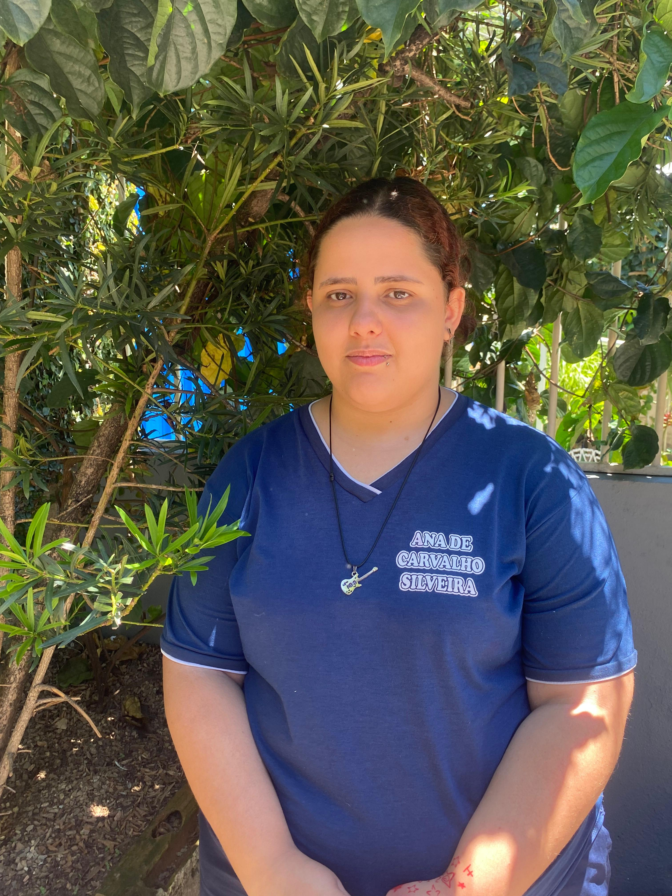

título

No curso,Yasmim Castro aprendeu neste curso que tudo bem errar e que é preciso aprender com esses erros,a maior dificuldade para ela é, certamente o Arduino e a manutenção, pois não possui muita habilidade com ambos. Ela acredita que sua facilidade seja o HTML. Gosta dessa área, pois sabe que é importante para a vida. Acredita que isso possa influenciar o futuro, visto que o mundo está em constante evolução. No momento, ela não tem planos para uma carreira específica, mas não retira essa área como uma possibilidade futura. O melhor momento foi quando o seu primeiro site funcionou, mesmo que tenha apresentado alguns erros. Ela se orgulha de hoje em dia poder dizer que já sabe um pouco. Seu objetivo é dominar a tecnologia por ser importante saber lidar com o que está por vir, mas reconhece que todos os conhecimentos são importantes. Ela não só teve, como continua tendo, paixão pelo que faz. Ela, que já passou e ainda passa por desafios, acredita que seu conselho para os outros seja ter coragem e força, pois há muito mais por vir. O curso também a ajuda a trabalhar com a sua timidez, o que significa que a auxilia a superar o medo de apresentar.
Descrição do portifolio